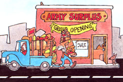

My husband and I have run a successful Army surplus business for more than 20 years. But apparently many people aren't aware of the bargains that can be had when Uncle Sam disposes of unwanted or "unfit for military use" items . . and as far as we're concerned, such folks don't know what they're missing!
The truth is that countless articles manufactured to military specifications can be bought at government auctions and-sometimes with the help of a little ingenuity-adapted to civilian use. And these sales aren't limited to military equipment, either. After all, a plethora of government offices generate great piles of leftover office furniture and machines, paper, ink, and the like. Hospitals unload beds, sheets, stethoscopes, and bandages. And motor pools dispose of old, battered, overused vehicles varying in size and shape from motorcycles to halftrack tanks. (One local purchaser I know of had to buy a field near Fort Lewis, Washington just to store the halftracks he bought.)
My mate and I have purchased everything from thousands of scratch pads (at scrap paper prices) to an old army flatbed truck for $59.95 (it needed only a new battery to be serviceable). We've also acquired clothing of many descriptions, calculators, sleeping bags, watches, pocketknives, and numerous household furnishings. We've even bought scrap cotton, then cut it up and sold it-for a profit-as wiping rags.
Of course, our primary aim is to purchase large quantities of goods, repair them if necessary, and then sell them-at a good markup-to other people. You, on the other hand, may simply want to attend sales to pick up a few items for yourself, but in case you later become interested in starting your own bootstrap enterprise, here-based on our experience-is how to do it.
SELLING SPACE
First off, you'll need to locate a large building such as a garage, a barn, or the back of a warehouse. This store doesn't have to be attractive, nor does it have to be on a busy street . . . because folks who enjoy browsing through Army surplus stores will drive miles to dig through items, and they don't tend to care much about the aesthetics of the shop.
My husband and I built our display tables by attaching flat doors (purchased, naturally, at a government sale . . . for 50 cents each) to sawhorses made from 2 X 4 pieces of lumber. We covered the walls of our store with velvet drapes (formerly an Army base's theater curtains), which we bought for $33.33. Our shelving was easily fabricated from boards and building blocks or bricks. And clothing bins were constructed from wooden boxes . . . tilted to allow customers to dig easily through the stacks.
Along with a simple storefront, someone interested in getting into the surplus bus iness should have a minimum of about $2,000 to purchase stock, a truck or trailer, a large storage area under cover, a sewing machine, a small woodworking shop, and a painting area (not to mention enough cash to live on until the store is opened).
The repair equipment is necessary because, in order to make the most profit from a surplus business, you must be able (and willing!) to fix up your merchandise. As you've probably guessed, many surplus goods sold by the government have been damaged. (Uncle Sam won't repair items if it's more costly to do so than it would be to sell them outright and get new supplies.) But since the surplus started out as the very best equipment the government could buy-often manufactured to strict specifications-even the items that need some work are still basically of a high quality.
ADVERTISING AIDS
Advertising is a very important factor for successful Army surplus selling. The owner should establish a budget for this purpose and adhere to it. We think the most effective selling method is to advertise in a daily newspaper and the little "shopper" papers that are handed out free in groceries and other stores. My husband and I run two or three ads scattered throughout our area's weekly shopper, and keep a few lines running every day in the classified section of the local newspaper.
SHOPPING FOR SURPLUS
Naturally, before you can set up a shop and begin advertising, you must accumulate some goods to sell. There are many places to find government surplus. The property disposal officers at local Army bases will, upon request, send catalogs to you describing upcoming sales. You can also obtain information about items available for purchase around the United States by writing to DOD Surplus Sales, Dept. TMEN, P.O. Box 1370, Battle Creek, Michigan 49016. (You'll first be sent a questionnaire, which you can fill out to indicate what sorts of surplus you'd like to bid on.)
The government doesn't offer "mystery" packages. Everything is open for close inspection, and merchandise is always sold on an as-is, where-is basis. In other words, Uncle Sam does not deliver, nor does he guarantee, anything. If a box full of jackets is put on the block, the bidder should be certain he or she has looked at those jackets carefully. Each disposal office does categorize the state of its surplus items, but keep in mind that one disposal officer's definition of "fair condition" may not match yours . . . or your customers'.
Bidders are given from ten days to a month to inspect the merchandise. It's wise to be prepared before you go to check out the property, too. So refer to catalogs from retail stores, browse through other usedgoods shops, and compare prices before you begin to bid. Keep in mind, too, that as a rule you should bid only half of what you'd charge your customers. Don't overbid, or you'll have to set too high a retail price . . . and you may end up stuck with 1,000 knapsacks (or worse).
You'll also find that a self-taught course in the prices commonly paid for scrap paper, tin, aluminum, iron, and rags is a necessity. Any recycling center can give you this information. (And do remember to take a magnet along when you inspect scrap metals.)
Generally speaking, there are three different methods of bidding. Some sales use the "spot bid" method, in which participants write down their offers on slips of paper and hand them to the auctioneer ... who determines the highest one and then awards the merchandise. A second sales technique is the "oral auction", in which each potential buyer holds up a numbered paddle to signify a bid, and the highest sum wins the items. The third method of sale is called the "sealed bid". Individual offers are mailed in . . . and the results are mailed back.
BE PATIENT
Try not to let auction fever get the better of you, because if you get infected with that bug, you might wind up with a payload of 3,482 neckties, or a year's contract to haul mess-hall scraps (to sell as pig food). I'd also advise that you never be in a hurry to purchase stock for your store. If what you would like to bid on doesn't show up at the first sale, don't fret: It will at some point. For instance, when our teenagers asked for a typewriter, an adding machine, a certain kind of bed, and some ski equipment, we told them just to wait . . . and, sure enough, those items eventually turned up at a sale for a fraction of what they would have cost in a retail store. Uncle Sam does require that all of the goods be paid for before they're hauled away. Business checks, money orders, and cash are all acceptable to the government . . . though an extra amount will be charged if a check fails to clear the bank, or if the purchased items aren't picked up within a certain number of days. In addition, a 20% deposit is often required on a sealed bid (it's refunded if a bidder is unsuccessful).
MORE THAN MILITARY
At our first sale we bought a wrecked helicopter for $66.66, those huge velvet drapes I mentioned before, and 200 pairs of khaki pants. My husband and I tore the helicopter apart and sold the aluminum for a good profit. The undamaged rotor also brought us a nice tidy sum. Our khaki pants sold like hotcakes at 59 cents a pair, and we used the drapes for our walls. After those successes we were hooked as surplus dealers.
Best of all, DOD Sales isn't the only agency that handles government auctions. The General Services Administration also sells a lot of merchandise. (For more information, write the GSA Business Service Center, Dept. TMEN, 7th and D Streets S.W., Washington, D.C. 20407.) Then, too, the U.S. Postal Service sells all dead letters and packages . . . some for as little as $1.00. Ask your local post office to notify you of the time and place of the next sale.
Even the Customs office runs auctions . . . to get rid of goods seized by the Internal Revenue Service for nonpayment of taxes and to sell articles confiscated from ports of entry into the United States. Some of these items are as exceptional as fine Jewelry, while others are as mundane as jogging shoes.
There are also some good publications available that can help you locate the correct office to contact regarding sales. For example, the U.S. Government Printing Office sells a book titled How to Buy Surplus Property (Publication No. 008-007-02939-8) for $3.25. Write to the Superintendent of Documents, U.S. Government Printing Office, Dept.
TMEN, Washington, D.C. 20402. Another guide, U.S. Government Surplus-A Complete Buyer's Manual by J. Senay, can be ordered for $7.95 from Rainbow Publishing Company, Dept. TMEN, P.O. Box 397, Chesterland, Ohio 44026. (In fact, Mr. Senay has offered to send any MOTHER-reader the name and address of his or her nearest Surplus Sales Headquarters free. Write to him at Rainbow Publishing Company and enclose a self-addressed, stamped envelope.)
So why not check out the surplus opportunities in your area and give "Uncle Sam's Discount House" a try. You, too, may end up-as the auctioneer says-"sold" on surplus shopping! Â
|
|
|
 |